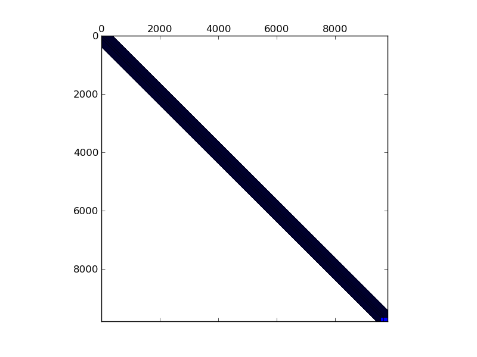

Matrix: t2d_q9_A_01

Program arguments: ../build/test_spmv_sim ../fpga16-benchmark/fpga16/t2d_q9_A_01.mtx File: ../fpga16-benchmark/fpga16/t2d_q9_A_01.mtx Sorting took: took 0.00482665 seconds. Param MatrixPath ../fpga16-benchmark/fpga16/t2d_q9_A_01.mtx Running on DFE Result Simple Total cycles=19954,19980, Result Simple Padding cycles=44,43, Result Simple Reduction cycles=4900,4901, Config ArchitectureId 5 Result Simple Input width =8, Result Simple Pipes =2, Result Simple Iterations=1, Result Simple Took (ms)=0.774685, Result Simple Est (ms)=0.00019954, Result Simple Gflops (est)=0.872256, Result Simple Gflops (actual)=0.000224672, Result Simple BWidth (est)=17.8814, Test passed! All tests passed!
Name, Order, Nonzeros, Unique Values, Sparsity, MC(2), MC(5), MC(8), MC(10) t2d_q9_A_01 9803 87025 1383 0.09056 0.15825 0.52272 0.91217 0.99587 1.00000